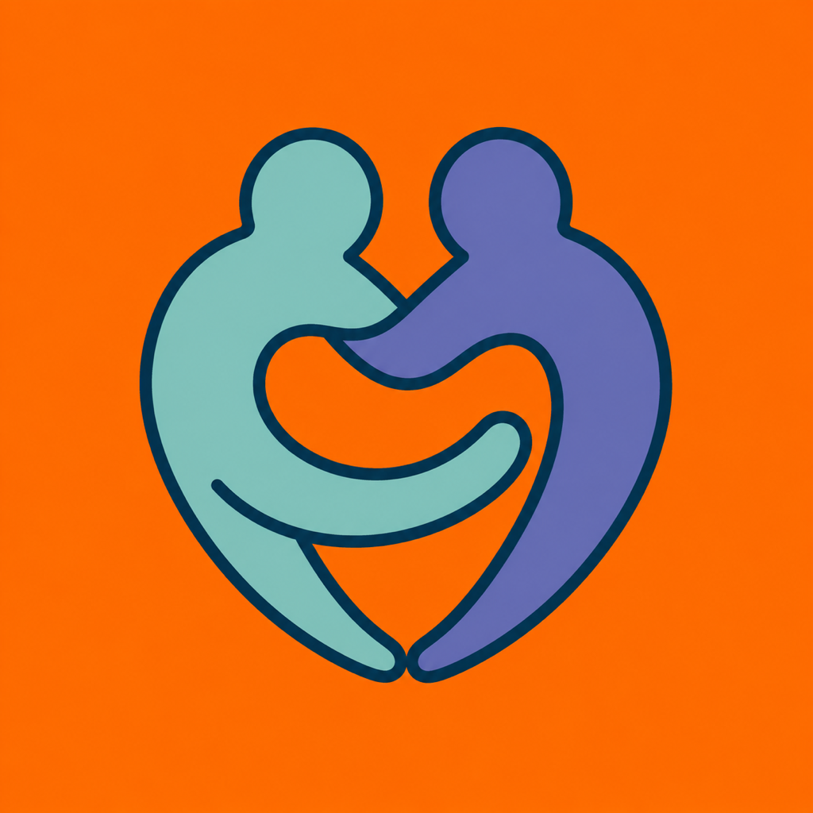
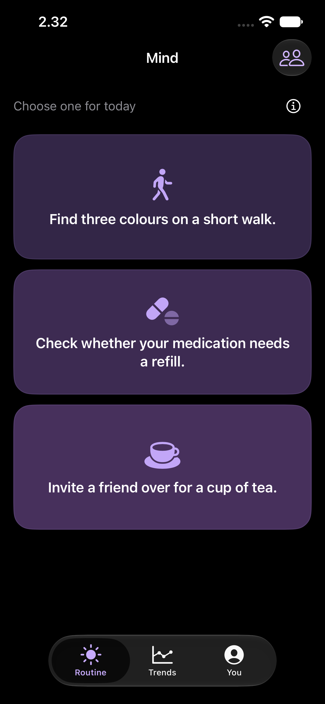
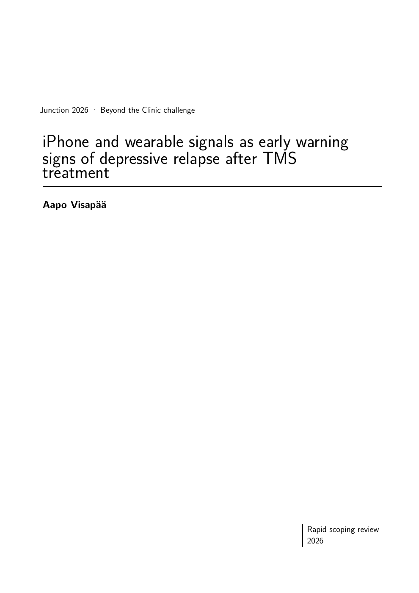

Start with your usual rhythm.
With your permission, shared Apple Health sleep and activity readings give context about changes in your everyday patterns.

Mind Explore MindAn iOS prototype for everyday support
Your sleep and activity help Mind suggest three small challenges. Choose one that feels doable, with your people close by.
An iOS prototype by BurgerFlippers · Junction 2026

The current Mind Routine screen.
Built around the life you already have
Some days, deciding where to begin takes energy of its own. Mind brings the choice down to something manageable.
With your permission, shared Apple Health sleep and activity readings give context about changes in your everyday patterns.
Choose from three concrete ideas across eating, movement, sleep, social connection and your existing medication routine.
A walk with a friend or a little practical help can be part of the next step. Your trusted people are ready when you want to reach out.
You choose what to share. Availability depends on what each source records.
Get a feel for Mind
Choose a category and tap a challenge. This example follows the app’s latest flow: selecting one is enough.
Illustrative web demo. No Health connection or assessment.
Choose one for today
A good choice. One small step is enough.
Your people
Illustrative contacts. Your real people stay in the app.
A little easier, together
Having someone ready means you don’t have to work out who to ask when a day feels harder.
Open your usual messaging app, or get help finding the words first. You choose what to send.

The thinking behind Mind
Rapid scoping review · 2026
What can iPhone and wearable data tell us about changes in everyday routines after TMS treatment? Read the review prepared for Beside, the original concept behind Mind.
Download the reviewPDF · 36 pages · 204 KB
Prepared for the Beyond the Clinic challenge at Junction 2026. This rapid scoping review has not been peer reviewed.
Start with what feels possible
Currently an iPhone prototype. No account needed to try the web example.